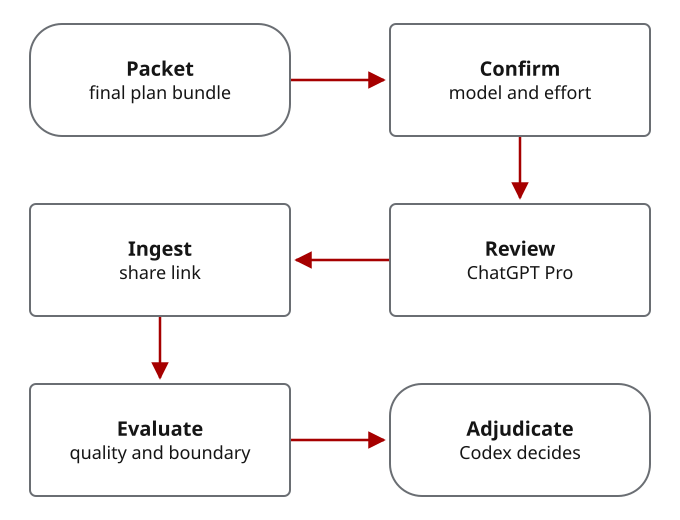

Agree what may be shared
First size the work with the prompt coach. Create an outside-review task only after the user has approved both the provider and the sharing boundary.
Ask before any project context is sent to the outside reviewer. Name the provider, the question and exactly what it may receive:
Should this project use an outside model for this review? If yes, may it receive only a brief with sensitive details removed, read selected repository material, or work on a separate patch branch? No outside sharing is the default.
Default to no outside sharing. Model preference alone is not consent to export repo state, private context, secrets, or unreleased material.
Keep outside assignments separate from normal tasks
Give each outside reviewer a separate Beads task. Guard labels keep ordinary Codex workers from claiming that task. One job-description label names the review discipline, such as security, architecture or documentation.
Operator reference: guard labels
contractor-only
no-codex-exec
contract-jd-security-reasoningUse exactly one primary job-description label. Split the work into separate Beads when a security review, docs review, and architecture critique all need independent reasoning.
Contract Beads should also populate native
skills, acceptance,
design, and notes fields. Avoid
literal \n text in multiline fields; use a heredoc
or file-backed input when creating contracts by hand.
Build and check the brief before sending it
The lead is usually the coordinating Codex agent. It may accept routine results only within your granted authority. Decisions reserved to you, or requiring human adjudication under the task or policy, stay with a human. The agent can prepare evidence and record that decision; it cannot approve it for you.
A contractor packet is the brief CWO prepares for an outside model: the assigned question, allowed material, selected snippets, provider identity and discipline-specific instructions.
The builder removes recognizable credentials and personal details, then checks the packet independently for sensitive content left after redaction. The helpers check allowed artifacts, snippets, provider identity and packet integrity. Before releasing a manual prompt, the export helper rechecks the protected approval, verifies sizing for the exact rendered request and screens the bytes it will print. A screening finding stops export before dispatch quota or audit is recorded. Inspect the prepared material before sending it.
For repo-readonly and patch-branch modes,
the packet only projects each first-level bead dependency to
id, title, status, and
dependency_type; missing scalar values become JSON
null, while nested dependency details and nonselected
fields are omitted. The full canonical summary is capped at 32 KiB
(32,768 UTF-8 bytes), and malformed or oversized summaries fail
before quota reservation, audit output, or packet output.
Packet validation rechecks both this projected shape and the size cap
independently.
For an outside assignment, complete the packet-building and dispatch steps below before handing a prompt to a CLI. Use the specialist guide if you have not yet chosen between native, internal and outside review.
For a managed expert review, put concrete shareable evidence for each required input in the redacted assignment or selected snippets. Use the expert’s declared input name, as in Review input [responsive targets]: 390px viewport with one column. Include the relevant fact or excerpt with any source locator. The builder refuses a packet if a required input is missing after redaction.
The two named architecture critics, Claude and Gemini, are
configured with their model and effort under
claude_architecture_critic and
gemini_architecture_critic in
policy/executor-registry.yaml. Both are dispatched
by hand from a rendered prompt. The
gemini_architecture_critic executor uses
Antigravity in plan mode from its configured trusted working
directory. The Claude critic can run under an optional
host-local account and executable; see the packet reference
below. For a redacted-packet review, run CLIs from a neutral directory unless
the tool is proven unable to inspect the current repository. If a
return uses unapproved repo context, treat that evidence as
invalid until the architect adjudicates it.
Operator Reference: Building Packets
Use the configured protected host to publish one approval for each assignment. The operator’s decision names the absolute, resolved target checkout (project), bead_id, epic_id (an exact ID or JSON null), the canonical executor, provider_key and maximum_share_boundary.
From the protected installation, the operator runs python3 -E -s -B scripts/lead_authority_host.py publish outbound-approval < approved-disclosure.json. See the sections “Operator-authorized comparison” and “Dispatch Flow” in the consensus reference and contracting reference.
Run the examples from the target checkout. Set CWO_SCRIPTS to the absolute path of the CWO installation’s scripts directory. Set the Bead variables to the assigned IDs and the approval variables to the corresponding references printed by the host. Rebuild previously prepared packets so the build record carries the approval reference. The packet build prepares the material for sizing.
After building the packet, measure the complete prompt with python3 "$CWO_SCRIPTS/cwo.py" manual-prompt --packet PACKET --rehearsal --json. Use the JSON prompt value after removing its leading Local rehearsal only. line and the following blank line. Use that exact text as the selected primary node’s prompt. Plain-text export adds a framing newline after the measured text. Keep the rehearsal output local.
Size the whole route using the selected executor, provider, model and effort, the request’s context and output limits, and any dependent work. Check the original input with python3 "$CWO_SCRIPTS/prepare_route_feasibility.py" < route-input.json. Set CLAUDE_WORKLOAD to the path of a JSON file with two fields, route_input containing that original input and node_id naming the selected primary node. Use the corresponding workload file for each managed export.
The export checks the planned bounds and renders the screened request. The sender applies those bounds when making the approved call and records what actually happened. Dispatch readiness reference.
Security review packet:
python3 "$CWO_SCRIPTS/build_contractor_packet.py" \
--bead "$SECURITY_BEAD" \
--executor claude_code_manual \
--share-boundary redacted-packet \
--opt-in-record "$SECURITY_OUTBOUND_APPROVAL" \
--job-description contract-jd-security-reasoning \
--format json \
--output contractor-packet.json
Architect-design critique packets: Second
opinions use the architecture reasoning label and dedicated
critic executors. The Claude architecture critic uses the model
and effort configured in policy/executor-registry.yaml.
Use the Manual dispatch command in the rendered prompt
and give the Claude CLI that prompt as input. To run the Claude
critic under a separate local account, set
transport.run_as for
claude_architecture_critic in trusted local
executor policy: user names an existing non-root
account and executable is the absolute path to that
account's Claude CLI. The host needs an existing noninteractive
sudo grant for that account. Routes and rendered prompts still
show the portable Claude command. The Gemini
architecture critic's manual command runs Antigravity in plan
mode with its configured model and trusted working directory.
When both are requested,
create one
contractor-only Bead per critic from the same Codex architect
proposal. Treat returns as critique evidence for Codex
architect adjudication.
python3 "$CWO_SCRIPTS/build_contractor_packet.py" \
--bead "$CLAUDE_CRITIC_BEAD" \
--executor claude_architecture_critic \
--share-boundary redacted-packet \
--opt-in-record "$CLAUDE_OUTBOUND_APPROVAL" \
--job-description contract-jd-architecture-reasoning \
--format json \
--output claude-architect-critique-packet.json
python3 "$CWO_SCRIPTS/dispatch_work.py" \
--packet claude-architect-critique-packet.json \
--mode manual \
--workload "$CLAUDE_WORKLOAD" \
> claude-architect-critique-dispatch-prompt.mdpython3 "$CWO_SCRIPTS/build_contractor_packet.py" \
--bead "$GEMINI_CRITIC_BEAD" \
--executor gemini_architecture_critic \
--share-boundary redacted-packet \
--opt-in-record "$GEMINI_OUTBOUND_APPROVAL" \
--job-description contract-jd-architecture-reasoning \
--format json \
--output architect-critique-packet.json
Web-design packet (patch-branch):
For repo-readonly and patch-branch packets, add the explicit
escalation flag and set DISCLOSURE_REASON to the
operator’s reason for approving the wider boundary.
python3 "$CWO_SCRIPTS/build_contractor_packet.py" \
--bead "$WEB_DESIGN_BEAD" \
--executor gemini_manual_reviewer \
--share-boundary patch-branch \
--allow-disclosure-escalation \
--waiver-reason "$DISCLOSURE_REASON" \
--opt-in-record "$WEB_OUTBOUND_APPROVAL" \
--job-description contract-jd-domain-web-design \
--allowed-file docs/index.html \
--allowed-file docs/styles.css \
--format json \
--output contractor-packet.jsonGive each reviewer the same question independently
For a consequential design, you may want separate critiques of the same initial plan. Create one task and one approved brief per requested reviewer, preserve their independent findings, then have the lead decide what changes. Any further review of the amended plan must address a defined need and have its own permission and allowance; it is not an automatic extra call.
- Create one Beads task per outside reviewer.
- Build one approved, redacted brief per reviewer after explicit sharing approval.
- Record the dispatch ID and packet hash before parsing any return.
- Reject or quarantine returns that claim unapproved repo inspection or command execution.
- Let the Codex architect accept, modify, defer, reject, or quarantine each finding.
See how reviews are combined, how explicit claims are compared and the retry-design example. The runnable retry exercise shows a smaller authored test. Exact executor IDs and commands follow below.
See separate reviewer assignments, checked returns and one lead decision.
Review the final plan before implementation
Use the evaluated second opinions to amend the plan first. If a final readiness review is required, give the selected reviewer the revised plan, dependencies, permitted changes, validation steps and unresolved questions. A list of task titles alone is not enough.

Required reviewer gate. A review required before implementation remains blocking. Confirm the approved route, model, any required settings and return evidence. Record a missing prerequisite and stop dependent implementation until the requirement is met or the operator changes it.
Capture the answer with its assignment identity, model confirmation and source record. Evaluate the evidence, complete any required peer review and let the lead record what changes. The reviewer cannot operate Beads, approve a release or gain implementation authority.
For ChatGPT Pro as the reviewer, follow the desktop app steps below.
Get a ChatGPT Pro review from the ChatGPT desktop app
ChatGPT Pro review runs from the ChatGPT desktop app. Run the architect's Codex thread in the desktop app; the thread uses @Chrome in the Chrome profile paired through the ChatGPT extension. The operator must be present and the review must be authorized. Browser access belongs to the desktop app session, so keep its browser connection inside the app.
Build the browser reviewer packet with the protected approval reference and within the assignment’s sharing boundary. Render the full prompt with the packet rehearsal. Remove the rehearsal label, its following blank line and trailing whitespace before entering the prompt in the sizing plan. In the original sizing plan, select the
Promodel and reserve at least50 * tokens_per_utf8_byte_upperinadditional_input_tokens_upperfor the 50 UTF-8 bytes in the generated request ID line.From the target checkout, use the same host audit store as the packet build. Set
packetto the packet path,workloadto the JSON file containing the originalroute_inputand selectednode_id, andrun_dirto a private run directory created withumask 077. Runpython3 "$CWO_SCRIPTS/cwo.py" prepare-browser --packet "$packet" --workload "$workload" > "$run_dir/request.txt"and inspect the screened request there.To prepare a new browser request from a dispatch recorded before sizing was required, build a packet with a fresh dispatch ID.
- Use
@Chrometo open a fresh ChatGPT chat in the paired profile. Select Pro and record the exact label shown in the model picker asmodel_label. With the operator present, send the screened request once, including its CWO request ID line, and readrequest_idfrom the posted message. - When the reply is complete, use
@Chrometo read its visible text and save it as UTF-8 in$run_dir/reply.txt. -
From the target checkout, evaluate the saved reply with the original packet, the posted request ID and the model picker label confirmed by the sender. Save the evaluation in the same private run directory.
python3 "$CWO_SCRIPTS/cwo.py" evaluate --contractor-packet "$packet" \ --browser-reply "$run_dir/reply.txt" --request-id "$request_id" \ --model-label "$model_label" --json > "$run_dir/evaluation.json"For a candidate-bound packet, also pass
--candidateand--candidate-root. - Complete any required peer review and the lead's adjudication before using the findings.
CWO links the dispatch, the private reply and the evaluator record in the host audit; the reply text stays in the private run directory. The legacy CDP browser transport and share URL or HTML intake are retired. If an assignment requires this reviewer and the route or evidence is unavailable, record the missing prerequisite and get the operator's decision before dependent implementation. Exact commands and flags are in the ChatGPT Pro desktop workflow reference.
Check the return before using its findings
For a managed manual return, use the same host audit store that prepared the dispatch. Set packet to the exact packet used for that dispatch and RETURN_RUN_DIR to a private directory outside the target checkout.
Capture the workspace from the target checkout before the approved call. The guard checks tracked files by default. Add --include-untracked to both guard commands when new files must also be checked.
python3 "$CWO_SCRIPTS/workspace_mutation_guard.py" \
--snapshot \
--output "$RETURN_RUN_DIR/before.json"Use the CLI and sharing boundary approved for the assignment. For Antigravity, give --add-dir the absolute path to the approved packet directory containing the screened prompt. Use agy --print or its short form agy -p with a short inline instruction such as Read contractor-dispatch-prompt.md and output only the contractor return template. See “Dispatch Flow” in the contracting reference.
Save the reviewer’s original reply as contractor-return.md in RETURN_RUN_DIR and record the assignment identity and confirmed model. Compare the workspace from the target checkout after the call.
python3 "$CWO_SCRIPTS/workspace_mutation_guard.py" \
--compare "$RETURN_RUN_DIR/before.json" \
--output "$RETURN_RUN_DIR/mutation-report.json"The reviewer uses the required contractor return template. Normalize the reply before evaluating it. Normalization records the exact reply bytes against the recorded dispatch. Evaluation uses the original packet and the same unedited reply to check the answer format, evidence and sharing boundary.
python3 "$CWO_SCRIPTS/normalize_contractor_return.py" \
--contractor-packet "$packet" \
--file "$RETURN_RUN_DIR/contractor-return.md" \
--workspace-mutation-report "$RETURN_RUN_DIR/mutation-report.json" \
--output "$RETURN_RUN_DIR/contractor-return-bundle.json"
python3 "$CWO_SCRIPTS/evaluate_return.py" \
--contractor-packet "$packet" \
--file "$RETURN_RUN_DIR/contractor-return.md" \
--workspace-mutation-report "$RETURN_RUN_DIR/mutation-report.json"A useful report of a failed check can be accepted as evidence. The evaluator reports delivery readiness as unknown without an issued observation tied to the independent requirement baseline and exact candidate. Use --report-json with the evaluation command to inspect both decisions. Use --json for the hash-bound evaluator payload used in file-based peer review and synthesis.
Return screening. The evaluator checks the structure of the answer alongside its existing risk checks. It flags instructions aimed at the lead or its tools, directives to change the assignment or skip review or validation, and unsupported completion claims. Record the source or check behind each material claim and identify any checks that were unavailable. Preserve a held return for architect adjudication and keep its findings out of implementation until the hold is resolved. Refresh earlier evaluations before reusing them in synthesis.
The provider registry classifies host Codex as
host-internal. The classification describes access.
Evaluate its output before using it.
Research evidence, Research contradictions,
and Research reflection sections. The evaluator scores
source locators, citation spans or excerpts, reliability,
relevance, access limits, contradictions, and replan notes before
those claims can influence synthesis or implementation.
Before closing a meaningful contractor, evaluation, or adjudication Bead, add a closure-memory comment with who was involved, what changed, why it closed, how it was validated, when it closed, where it ran, decisions, evidence, residual risk, and follow-up. Keep the close reason terse so future agents can recover the decision trail from Beads without rereading the whole transcript.
What the historical contractor demo showed
The hello-world contractor demo is the concrete reference for manual outside dispatch. It used separate patch branches for Antigravity documentation work and Claude Code GitHub Pages work, then treated both returns as evidence for Codex review rather than direct authority.
Preparing the packet with dispatch_work.py rendered a prompt for a separate operator-run CLI call. The demo used Antigravity for the documentation assignment and showed why returned work needs editing and validation before publication. Keep packet and return artifacts private by default; check public files for local paths, broken links, incorrect attribution and claims of tests that did not run.